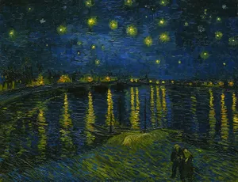
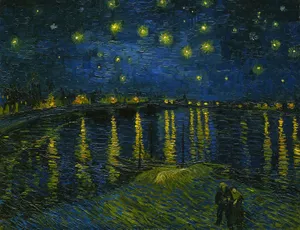

Vincent van Gogh

Vincent van Gogh, nascido em 30 de março de 1853, na Holanda, foi um pintor pós-impressionista cuja obra revolucionou a arte ocidental. Em sua juventude, trabalhou em diversas áreas, como comerciante de arte e missionário, mas foi somente aos 27 anos que se dedicou à pintura, desenvolvendo um estilo único e emocional. A busca por significado e a luta contra suas próprias dificuldades psicológicas permeiam grande parte de sua obra, que é conhecida pelo uso expressivo das cores e pelas pinceladas vibrantes.
Durante sua vida, Van Gogh passou por períodos de grande instabilidade mental, o que o levou a diversas hospitalizações, especialmente durante sua estadia em Arles, no sul da França. Nesse período, criou algumas de suas obras mais famosas, como Os Girassóis, A Noite Estrelada e O Quarto de Van Gogh. Sua arte, intensamente pessoal, foi fortemente influenciada pela observação da natureza e pela busca de uma expressão genuína de suas emoções.
Apesar de sua dedicação à pintura e de sua produção prolífica — com cerca de 2.100 obras — Van Gogh teve pouco reconhecimento em vida, tendo vendido apenas uma obra. Sua morte prematura em 1890, aos 37 anos, marcou o fim de uma carreira curta, mas profundamente impactante. Hoje, ele é considerado um dos maiores artistas da história, e suas obras continuam a inspirar e influenciar gerações de artistas e admiradores ao redor do mundo.
 
